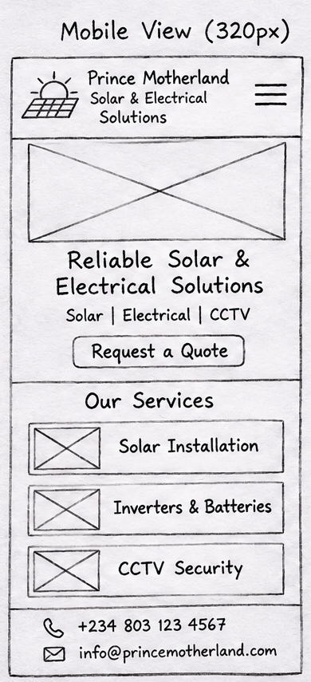
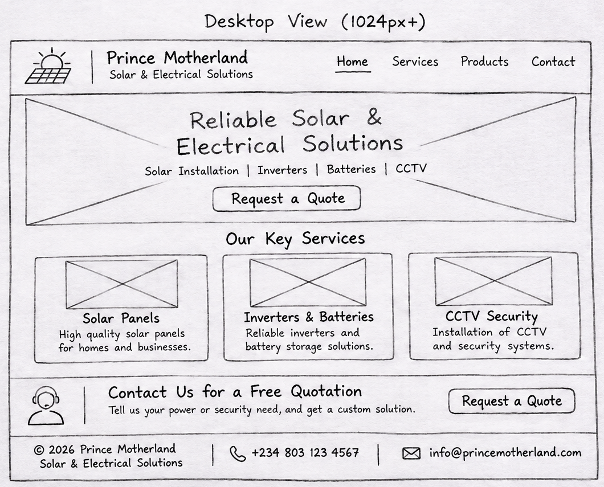

1. Site Name
Prince Motherland Solar & Electrical Solutions
The name represents a technical business specializing in solar energy systems, electrical installations, CCTV security systems, and electrical maintenance. It was selected because it reflects the business identity and its commitment to reliable energy and security solutions.
Proposed domain: prince-motherland.com (a proposed name only; availability has not been checked).
2. Site Purpose
The purpose of this website is to provide customers with information about Prince Motherland Solar & Electrical Solutions and the services it offers. It will help homeowners, businesses, and organizations explore solar products, electrical installation services, and security solutions.
- Introduce the company and its technical services.
- Present solar panels, inverters, batteries, and related products.
- Explain solar installation, maintenance, and electrical services.
- Provide information about CCTV installation and security systems.
- Allow visitors to submit enquiries and request quotations.
- Provide business contact information.
3. Target Audience and Scenarios
The target audience includes homeowners, business owners, facility managers, organizations, and people seeking solar energy or electrical installation services.
Scenario 1
What type of solar panels, inverter, and battery capacity do I need to provide reliable electricity for my home?
Scenario 2
How can I request a quotation for solar installation or CCTV security system installation?
Scenario 3
What are the specifications and prices of the solar products available?
Scenario 4
Where can I find professional electrical maintenance and solar installation services?
4. Color Schema
The color scheme is inspired by technology, energy, reliability, and sustainability.
Deep Navy Blue — #102A43
Used for the header, navigation, section headings, and footer. It represents professionalism and trust.
Energy Gold — #F4B400
Used for buttons, highlights, borders, and calls to action. It represents solar energy and innovation.
Light Background — #F4F7FA
Used for the page background and content areas to create a clean, open layout.
Dark Text — #243B53
Used for paragraphs and descriptions to maintain readable text contrast.
5. Typography
Montserrat — Headings
Montserrat will be used for the site title, section headings, navigation labels, and product headings. Its modern appearance supports a professional technical identity.
Open Sans — Body Text
Open Sans will be used for paragraphs, descriptions, product information, and forms. It is clear and readable on mobile and desktop screens.
6. Website Structure and Navigation
Home Page — index.html
- Company introduction and welcome message.
- Featured solar and electrical services.
- Featured products and calls to action.
Products Page — products.html
- Solar panels, inverters, batteries, and specifications.
- Product prices and categories.
- Product search, filtering, and modal details.
Contact Page — contact.html
- Company contact information.
- Customer enquiry and quotation request form.
- Business location and service information.
7. Home Page Wireframes
The following sketches illustrate the proposed home page structure for mobile and desktop screens. They are planning illustrations; review your course's requirement for student-created wireframes and redraw them yourself if required.
Mobile View (320px)

Desktop View (1024px and wider)

8. Planned JavaScript Functionality
- Use the Fetch API to retrieve product information from a local JSON file.
- Dynamically display at least 15 products, each with at least four data properties.
- Use array methods to filter and display products.
- Use local storage to save a visitor preference or favourite products.
- Use an accessible modal dialog to show product details.
- Use DOM selection and event listeners for interactive features and forms.
- Organize JavaScript with ES modules and handle fetch errors with try...catch.
9. Accessibility and Responsive Design
The website will use semantic HTML, meaningful alternative text, keyboard-accessible controls, clear form labels, and sufficient color contrast. The layout will adapt to mobile, tablet, and desktop screens without horizontal scrolling. Images will be optimized and lazy-loaded where appropriate.
10. Conclusion
This project will demonstrate how HTML, CSS, and JavaScript can support a technical business. The finished website will provide a professional online presence, useful product information, and a convenient way for customers to contact the business.